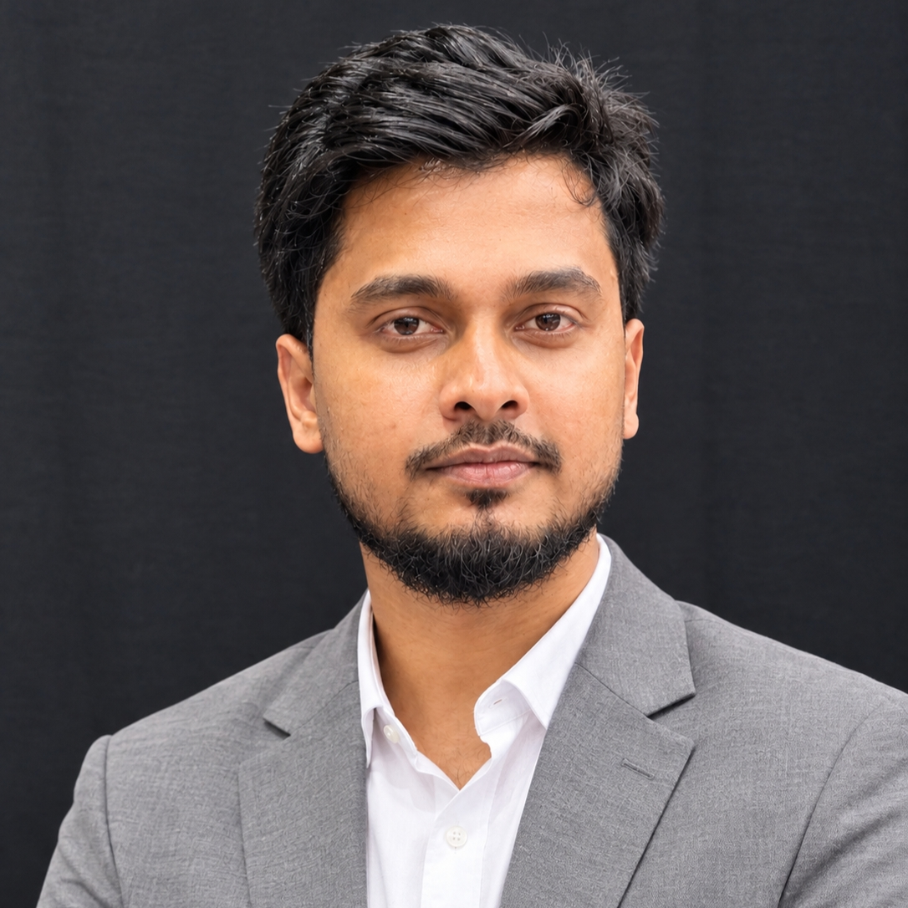

I map where climate hazards, water systems, and communities intersect — combining GIS, remote sensing, and explainable machine learning to read risk into Bangladesh's floodplains, river basins, and coastlines.

I'm Md. Mominul Islam, a geographer and geospatial analyst from Sylhet, Bangladesh, currently finishing an MS in Geography and Environment at Shahjalal University of Science and Technology (SUST). My thesis reads the Teesta River Basin's shifting water balance through satellite data and explainable machine learning — part of a wider interest in how climate risk shows up on the ground, in river basins, seismic zones, wetlands, and coastal communities alike.
I currently work as a GIS Analyst (Water Modelling) at SPEKTER GmbH in Germany, building hydrological and hydraulic models with the MIKE suite and HEC-RAS. Alongside this, I keep an active research line in Bangladesh — earthquake risk, flood susceptibility, drought patterns, and climate-driven migration — usually with a spatial model at the center and a plain question behind it: who is exposed, and why.
Two degrees, one department — Geography and Environment at SUST.
From spatial statistics on Bangladesh's seismic and flood risk, to production hydraulic modelling in Germany.
Tools I reach for, grouped by what they're for.
Journal quartile shown as a signal badge — Q1 highest, Q3 lowest — the way a field instrument reads signal strength.
What's mapped and ready, and what's still being surveyed.
Open to collaboration on GIS, hydrological modelling, and climate risk research — or opportunities in geospatial analysis and disaster risk management.